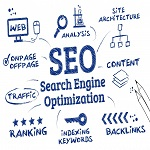

Como colocaremos seu site no topo?
Ao iniciar uma campanha de otimização no seu site, você poderá perceber que a melhora no posicionamento para as palavras-chave do seu negócio é diretamente proporcional à quantidade de acessos que vai receber, além de gerar também maior visibilidade para a marca e um retorno em conversões no site.
Para isso iremos estudar seu mercado de atuação, focando nas lacunas deixadas pelos seus concorrentes que já utilizam a internet como veículo de venda e divulgação.
Isso nos ajudará a criar uma estratégia efetiva de otimização, voltada a posicionar o seu site nas primeiras colocações dos buscadores.
Últimos Posts
-

O que é SEO (Search Engine Optimization)?
É um conjunto de técnicas de otimização para sites, blogs e páginas na web. Essas otimizações visam alcançar Leia mais...
-

Quais são as vantagens de usar as estratégias de SEO?
É comprovado que a maioria esmagadora das pessoas que executam uma pesquisa no Google clicam apenas nos primeiros resultados que aparecem no topo da página. Isso quer dizer que Leia mais...